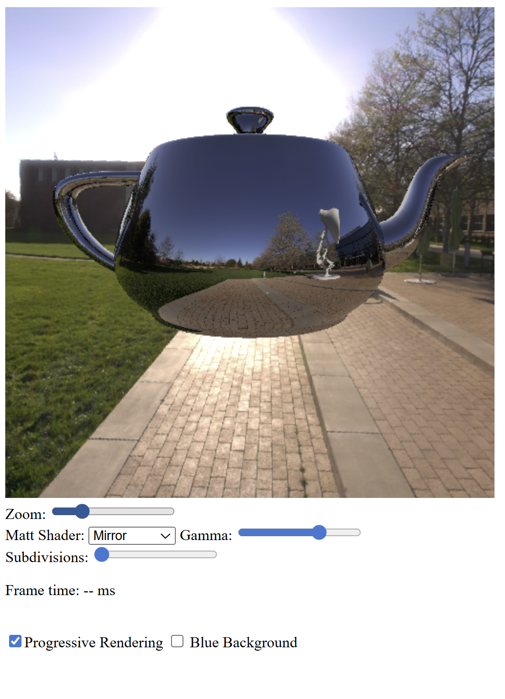
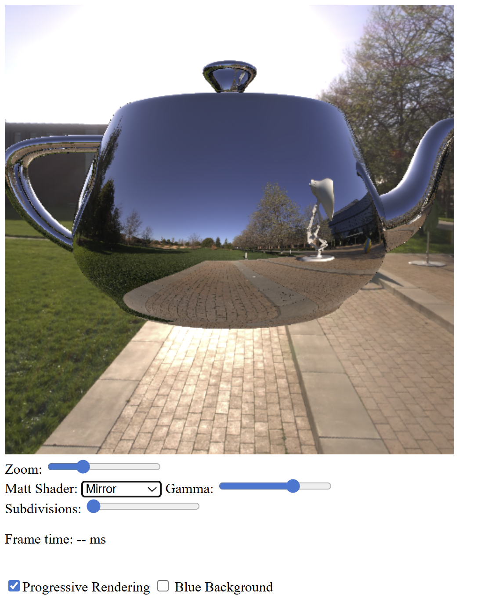
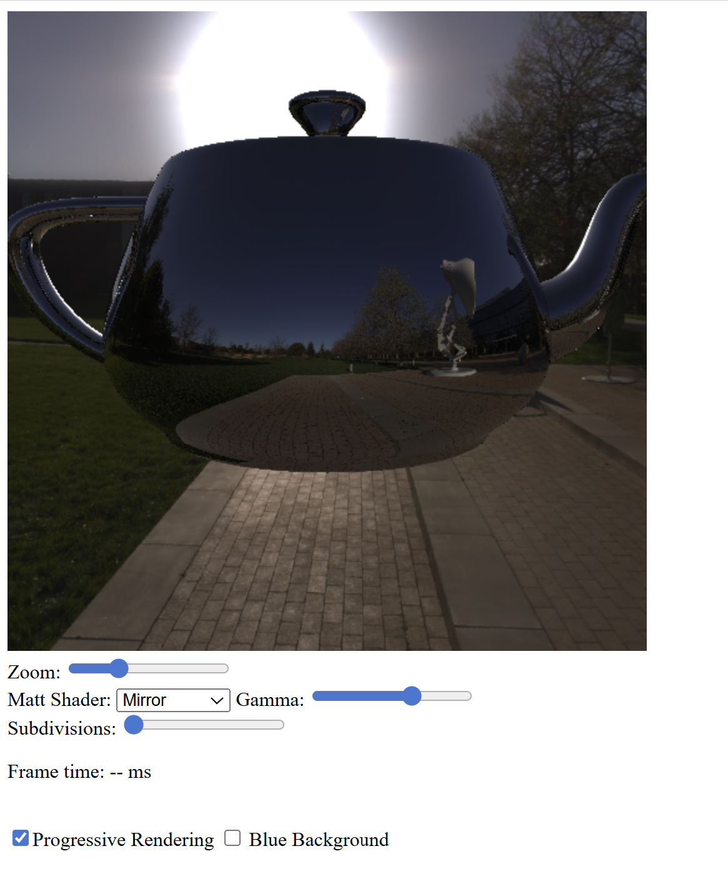
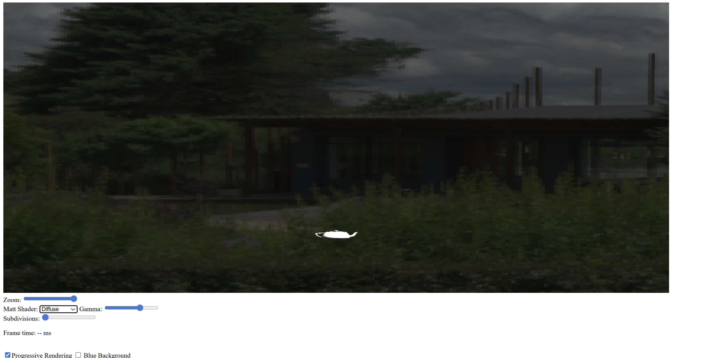

Exercise 1 — Panoramic environment map
Compared to previous worksheets, I replaced the uniform background color with a panoramic environment map. When a ray does not intersect any object, its direction is mapped to texture coordinates and used to sample the environment texture.
This allows the background to represent a real photographed scene. I loaded a triangle mesh (Stanford bunny / teapot) and added a selection menu that lets the user switch between base color, diffuse, and mirror shading.
Source code: GitHub – Worksheet 9 / Exercise 1
Exercise 2 — HDR environment lighting and holdout plane
Compared to Exercise 1, I replaced the low dynamic range environment map with a high dynamic range (HDR) environment. The HDR texture is loaded using hdrpng.js and decoded from RGBE format to recover the original radiance values.
Direct light sources are removed so that illumination comes entirely from the environment. This produces more realistic diffuse shading but requires many samples to converge.
To anchor the object in the scene, I added a holdout plane. The object casts shadows onto this plane using an ambient occlusion shader, computed by tracing rays over the hemisphere around each surface point.
Source code: GitHub – Worksheet 9 / Exercise 2
Exercise 3 — Sunlight with environment lighting
Compared to Exercise 2, I added a directional light to represent the sun visible in the environment map. The background uses a low dynamic range environment texture, while the directional light provides strong, coherent illumination.
The object now casts shadows onto the holdout plane both because parts of the environment are occluded and because the directional light can be blocked. This combination improves depth perception and realism.
Source code: GitHub – Worksheet 9 / Exercise 3
Exercise 4 — Custom HDR environment
Finally, I selected a custom HDR environment map from Poly Haven and converted it to a compatible format using hdrpng.js. The render resolution was changed to a wide aspect ratio to better match the panoramic environment.
I adjusted the camera position and scale so that the digital object is placed naturally within the photographed scene. This exercise demonstrates how environment maps can be used to integrate synthetic objects into real-world lighting conditions.
Source code: GitHub – Worksheet 9 / Exercise 4